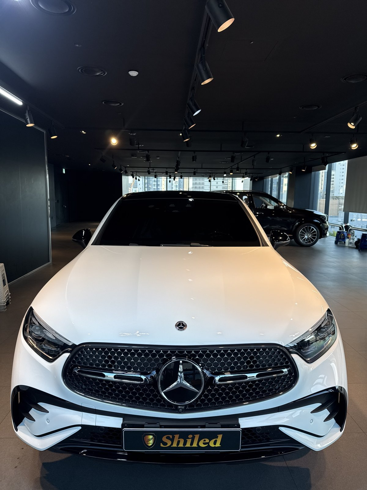
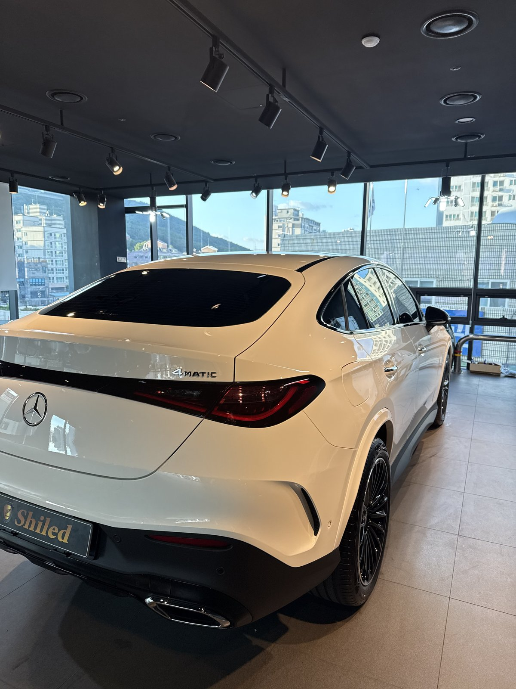
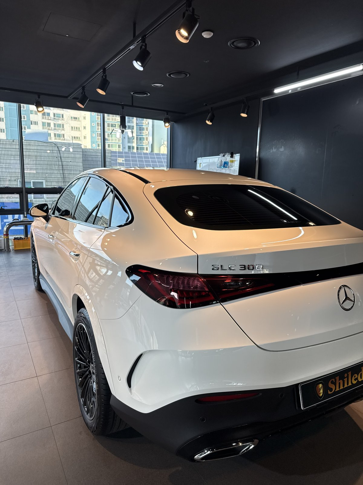
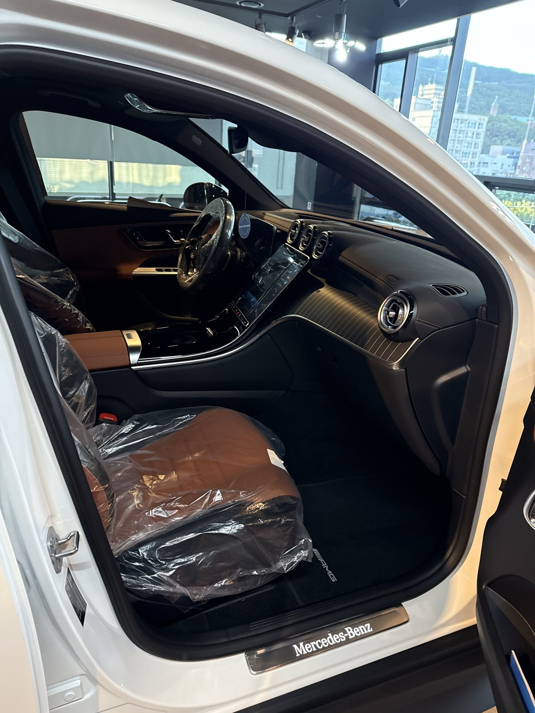
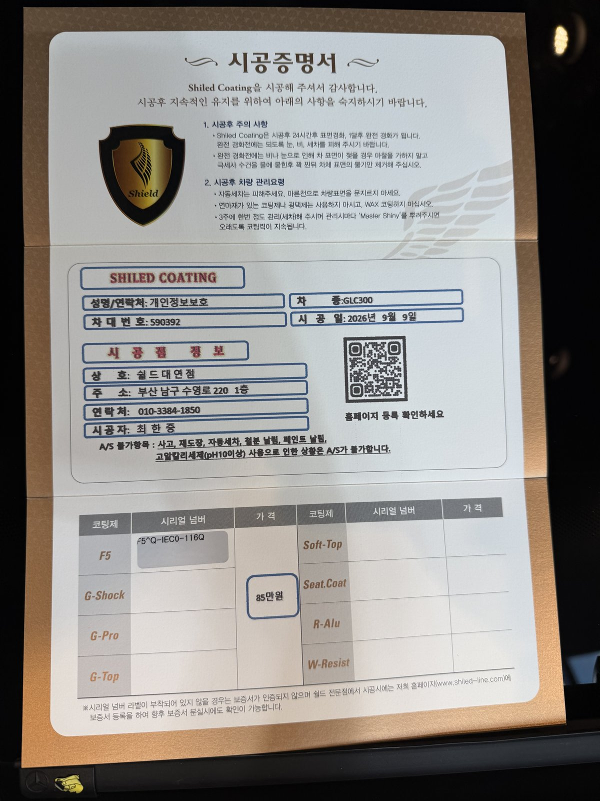

벤츠 GLC300 쿠페 AMG라인, 백색입니다.
같은 날 매장에 들어온 두 번째 GLC300 쿠페로, 이 차도 출고 전 F5 유리막코팅으로 진행했습니다.

같은 조합의 차가 하루에 두 대 들어오는 일이 종종 있습니다. 겉으로는 같은 백색 GLC300 쿠페라도 차대번호와 코팅 시리얼은 차량마다 따로 기록되고, 증명서도 각각 발급됩니다.
쿠페형 루프라인, 곡면이 관건입니다
일반 SUV보다 곡률이 큰 구간이 많기 때문입니다.
GLC300 쿠페는 루프라인이 뒤로 갈수록 완만하게 떨어지는 패스트백 실루엣입니다. 이 곡면을 따라 코팅제가 고르게 퍼지도록 도포 방향을 곡선에 맞춰 바꿔가며 진행했습니다. 일반 GLC보다 손이 한 번 더 갑니다.

백색 신차에 왜 F5인가
F5는 색감 깊이를 끌어올려 글로시함을 극대화하는 코팅입니다.
백색은 자칫 평면적으로 보이기 쉬운 색입니다. 여기에 F5를 올리면 표면에 맺히는 반사광의 경계가 또렷해져, 같은 백색이라도 더 깊고 입체적으로 보입니다. 쿠페형 루프의 완만한 곡선을 따라 빛이 흐르듯 이어지는 것도 F5 특유의 반사 덕입니다.

기술자의 팁
신차라고 바로 코팅을 올리지 않습니다. 운송·보관 중 묻은 미세 오염을 디테일링 세차와 탈지로 걷어낸 뒤에 올립니다. 깨끗한 바탕 위에 올려야 코팅이 제대로 밀착합니다.
코냑 브라운 AMG 인테리어, 실내도 새 차 그대로
실내는 코냑 브라운 가죽시트에 AMG 전용 플로어매트까지 신차 그대로입니다.
도어 실에 새겨진 Mercedes-Benz 각인과 함께, 외부 도장은 F5로 발색을 잡고 인도까지 깨끗한 상태로 관리합니다.

시공증명서를 함께 드립니다
모든 시공 차량에 시공증명서를 드립니다.
차종·시공일·코팅제 시리얼 번호가 적혀 있고, 홈페이지에 등록해 보증을 받으실 수 있습니다. 이 차는 F5 코팅으로 기록돼 있습니다.

차종·시공일·코팅제 시리얼이 기재된 시공증명서
자주 묻는 질문
Q. 쿠페형 SUV는 코팅할 때 뭐가 다른가요?
A. 루프라인이 뒤로 갈수록 완만하게 떨어지는 곡면이라, 일반 SUV보다 곡률이 큰 구간이 많습니다. 이 곡면을 따라 코팅제가 고르게 퍼지도록 도포 방향을 곡선에 맞춰 바꿔가며 진행합니다.
Q. 같은 날 같은 차종이 두 대 들어오면 시공이 겹치지 않나요?
A. 차량별로 순서를 정해 한 대씩 진행합니다. 이 차는 9월 9일 같은 날 입고된 두 번째 GLC300 쿠페 AMG로, 차대번호와 코팅 시리얼이 각각 따로 기록돼 증명서도 차량마다 별도로 발급됩니다.
Q. 백색 신차에는 어떤 코팅이 좋나요?
A. 이 차는 F5로 진행했습니다. F5는 색감 깊이를 끌어올려 글로시함을 극대화합니다. 백색은 자칫 밋밋해 보이기 쉬운데, F5를 올리면 표면에 맺히는 반사광이 또렷해져 더 깊고 입체적으로 보입니다.
Q. 쉴드광택 위치와 예약은 어떻게 하나요?
A. 부산 남구 유엔로220 1F 쉴드광택입니다. 예약·상담은 010-3384-1850, 대표 최한중이 직접 상담하고 책임 시공합니다.
새 차일수록 시작점이 다릅니다. 가장 깨끗할 때 입혀두십시오.
제품을 직접 만드는 사람이 직접 시공합니다.
부산에서 신차코팅을 고민 중이시면 편하게 연락 주십시오.
어떤 차를 타냐보다 어떻게 타냐가 중요합니다~!
시공 중에는 전화를 받지 못할 때가 많습니다.
카카오톡으로 차종과 원하시는 시공을 남겨주시면 확인 후 답변드립니다.
쉴드광택 · 부산 남구 유엔로220 1F · 대표 최한중